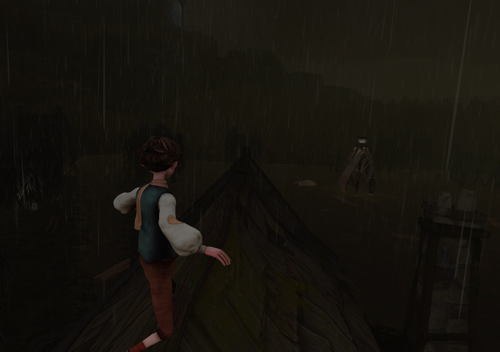
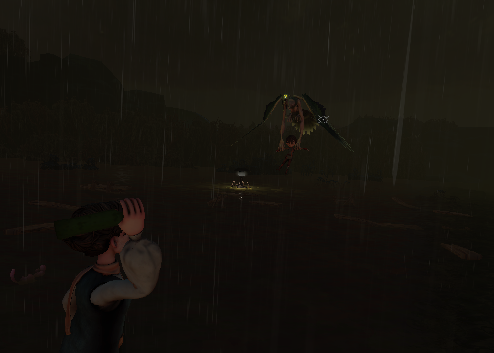
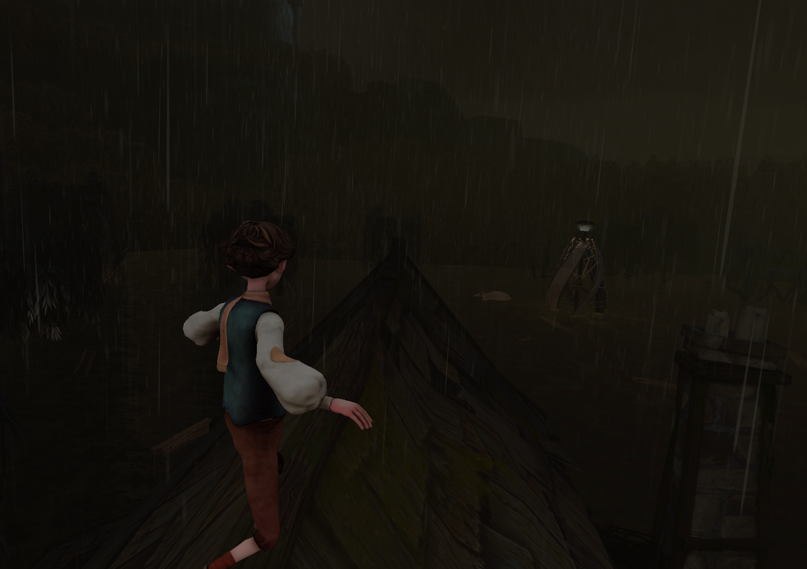
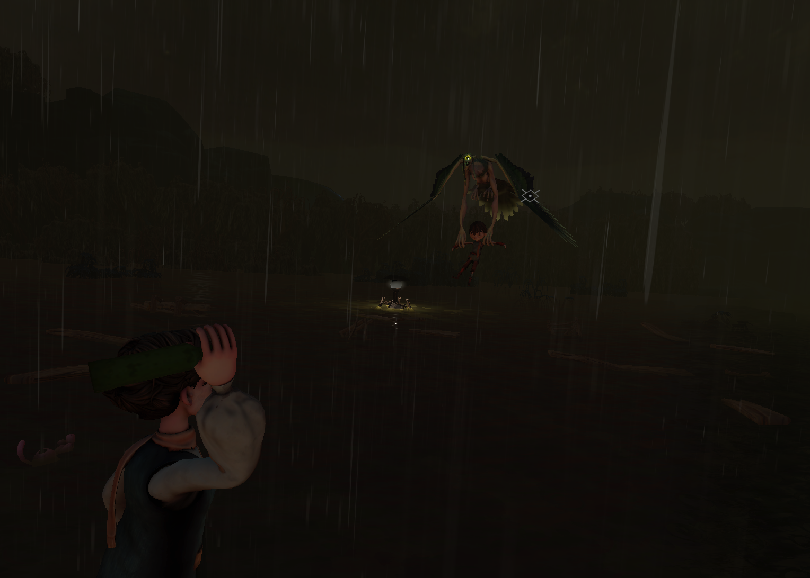
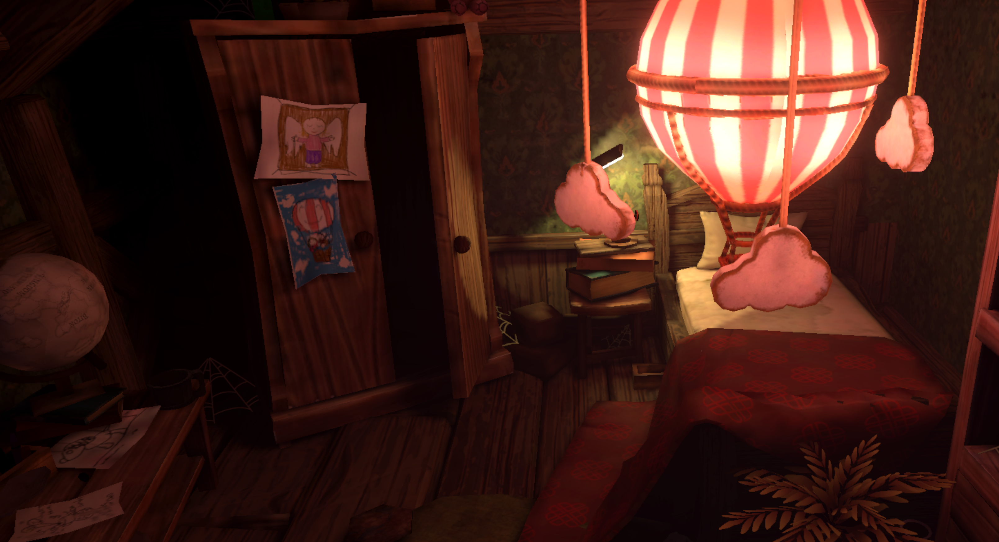
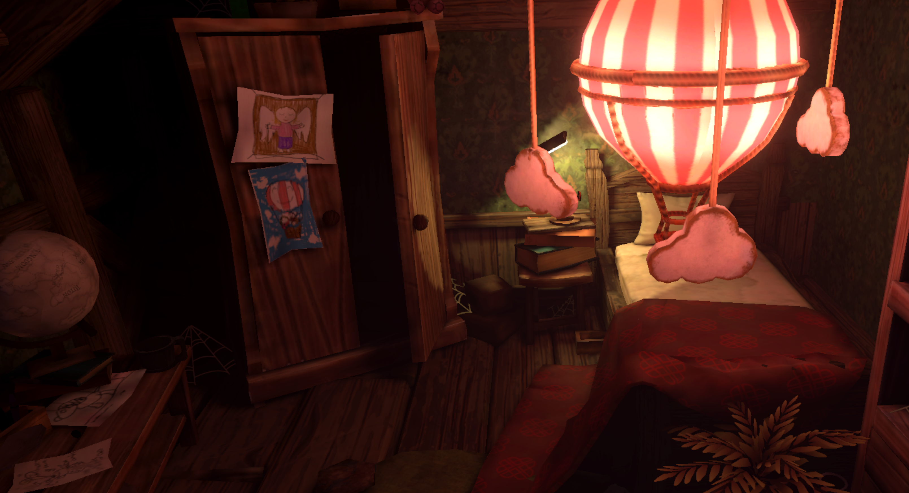

The game
Waste Pike is a vertical slice game project in Unity Virtual Reality. My contribution was to set up and program two entire scenes. Additionally, I added animation tools to the player model in several other scenes. The scenes I worked the most on are the boss battle scene and the end scene. I worked on programming with the animation, UI, scenes and events, implementing animation physics tools.
This project was done in a team of other interns and one co-worker. I joined in the last couple of weeks. My main function in the project was gameplay programmer.
What my tasks were
- Movement: I worked out and implemented the movement mechanics of the player and the boss, creating a linear movement for the player and a spline movement for the boss.
- Interactions: Implementing the throwing mechanic in VR. It was my first time doing something like this. To complete this mechanic I used a parabola to mimic a throw, along with focusing on making every little part of the throwing mechanic easily tweak-able.
- Sound effects: I implemented all sound effects, including the background music, player/boss movement and environment sounds.
- Terrain changes: I implemented a dynamic scene environment in which the terrain changes as the player progresses in the scene.
- Programming with animation: creating events in the animation frame in order to obtain smooth animation. Same goes for the boss scene, changing animation states depending on what happens, like the animation changes depending where the boss is hit. Additionally I made the animation as easily customizable.
- Animation physics tools: Implementing the final touches I added physics animation tools to the in game characters. Making the character animation interact with the environment in a more realistic way. For example walking on certain surfaces, a more lifelike movement when bumping into objects and getting hit by a projectile.
- UI: Helping with the UI of what I learned from the other projects, making sure everything goes well and transition to the next scenes and events.
 
